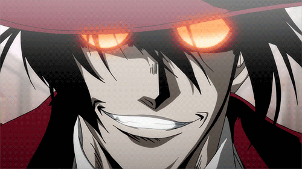

Vampiro

Habilidades e Transformações:
- Potencial de despertar (Requer: +5 EGO)
- Força Noturna (Requer: +8 Força, +7 Velocidade)
- Garras de Sombra (Requer: +8 Força, +7 Velocidade)
- Regeneração Vampírica (Requer: +9 Inteligência, +8 Força)
- Físico Sob-Humano (Requer: +9 Força, +8 Velocidade)
- Sede de Sangue (Transformação) (Requer: +10 Força, +9 Ego)
- Lorde Vampiro (Transformação) (Requer: +10 Força, +9 Ego)
- Reviver os Mortos (Requer: +10 Inteligência, +8 Ego)
- Manto da Noite (Requer: +8 Velocidade, +7 Inteligência)
- Toque da Morte (Requer: +9 Força, +9 Ego)